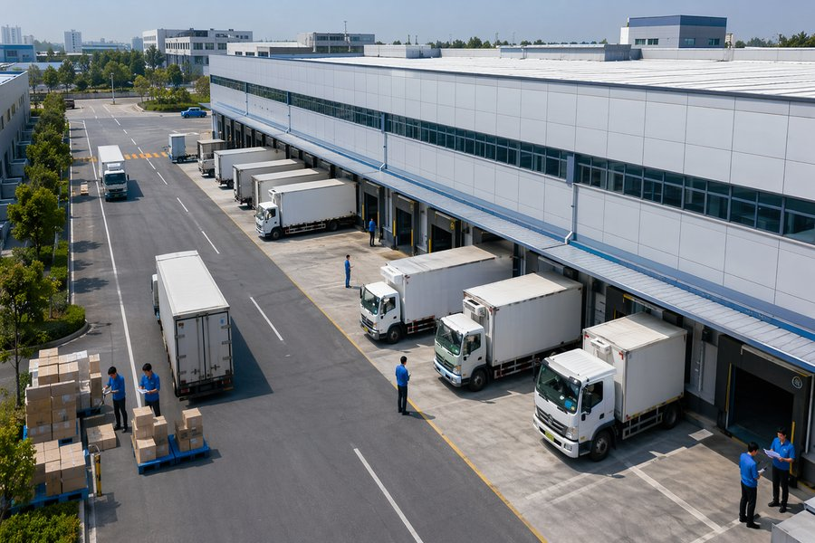

做物流的朋友，经常把OMS、WMS、TMS搞混。有人说WMS管仓库、TMS管运输、OMS管订单，这么说没错，但太笼统了。
这三个系统到底什么关系？

很多企业把OMS、WMS、TMS当成三个平行系统来规划，这是第一个坑。
它们是上下游的调用关系。OMS接单后算出最优发货仓，生成拣货任务推给WMS。WMS执行完出库，把实际出库信息传给TMS。TMS排车配送，签收后把状态回传OMS完结订单。
数据流是单向为主、双向校验。OMS到WMS到TMS是主流程，TMS签收状态回传OMS做订单完结，WMS库存变动反馈OMS做库存同步。这个流向搞反了，后面全是扯皮。
我做过不下二十个物流系统集成项目，接口问题占了项目延期原因的一半以上。
最常见的坑是主数据不一致。OMS用一套商品编码，WMS用另一套，TMS又是一套。三套编码要做映射，映射表维护不好，数据一跑就乱。
2014年项目教训：上线两个月了突然大批订单卡住。查了三天才发现，那个月新品上架了200多个SKU，OMS侧的编码映射表没更新，WMS根本找不到对应库位。这种问题不难解决，但要命的是发现得晚。
接口协议也是坑。有的系统用REST API，有的用MQ消息队列，有的还停留在FTP传文件。我见过一个企业，三种协议并存，中间件运维成本翻了三倍，出问题排查起来要跨三个团队。
我的经验：统一用REST API做同步调用，MQ做异步消息。主数据编码在OMS侧统一管理，WMS和TMS通过接口获取，不要各自维护一套。
很多人觉得OMS就是接个单，没那么简单。
OMS的难点在履约路径计算。一个订单进来，OMS要根据收货地址、库存分布、时效要求、物流成本，算出最优的发货仓库和配送方式。
2018年OMS重构案例：一个全国性医药商业公司，原来哪个仓有货就从哪个仓发。天津仓的货经常发到广东，物流成本高，冷链药品温控风险大。重新设计了履约规则：优先就近仓发货，冷链商品优先选有冷链专线的仓。光这一项优化，年物流成本降了12%。
拆单合单也是技术活。一个订单里有常温和冷链商品，必须拆成两个子订单。同一个客户一天下了5个单，收货地址相同、时效要求一致的可以合并。但如果其中有一个是加急单，就不能混在一起。
这些规则不能写死在代码里，要做成可配置的规则引擎。
WMS的核心目标就四个字：账实相符。
听起来简单，做起来能把人逼疯。仓库里每天几千个SKU在动，入库、上架、移库、拣货、复核、出库、盘点，每个环节都要做到系统账和实物账一致。
医药行业的WMS比普通WMS复杂得多。GSP合规要求全程追溯，冷链商品要监控温湿度，首营品种要单独管理，批号和效期要精确到最小包装单元。
WMS还有一个容易被忽视的功能：波次规划。不是订单来了就拣，而是把多个订单合并成一个波次，按拣货路径优化后批量拣货。我给一个日均3000单的仓库做过波次规划优化，拣货效率提升了35%，拣货员从12个人减到8个。
TMS的收益很多人算不清楚。
年配送费用500万的企业，TMS上线后通常能带来三块收益。路线优化减少行驶里程，行业经验值在15%到25%之间。配载优化提高车辆装载率，大概20%到30%。调度自动化减少人工，50%左右。三块加起来，年省100万到150万，两年回本。
但TMS的价值不只是省钱。签收环节的数字化是被很多企业忽视的。纸质回单容易丢、容易假、核对慢。电子签收实时回传，OMS可以秒级完结订单，财务可以即时对账。
在途监控也是。客户能实时看到货到哪了，客服不用打电话问司机。堵车、车辆故障这些异常，系统自动预警，调度可以提前安排备选方案。
第一步，先上WMS，把库位规划清楚、库存数据盘准、出入库流程跑顺。别急着上高级功能，先做到账实相符。很多企业WMS上了半年，库存准确率还不到90%，这种状态下接OMS只会更乱。
第二步，上OMS和WMS对接，把订单和仓储打通。这一步最关键，也最容易出问题。重点是接口设计和主数据统一。
第三步，上TMS，把配送打通。TMS的实施相对独立，但要确保和WMS的出库数据对接准确。
第四步，做数据打通和运营优化。三个系统的数据沉淀下来，做库存预测、配送路径优化、成本分析。
踩坑提醒：三个系统同时上没问题，但必须有一个总负责人，三个系统的业务都懂，能协调三个团队。我见过太多项目，三个团队各干各的，上线了接口对不上，又花三个月返工。
OMS、WMS、TMS是一条供应链上的三个环节。搞物流信息化，必须把这条链看清楚。
我是毅哥，做了二十多年医药物流信息化，从写代码到做架构设计，从基层管理做到企业高管。现聚焦于医药生产工艺优化、医药企业信息化咨询及绿色能源改造升级，致力于用AI与数字技术驱动医药企业精益增长。更多物流实战经验，关注公众号「物流运营分享」或访问 https://wuliu-coclaw.github.io/Github/